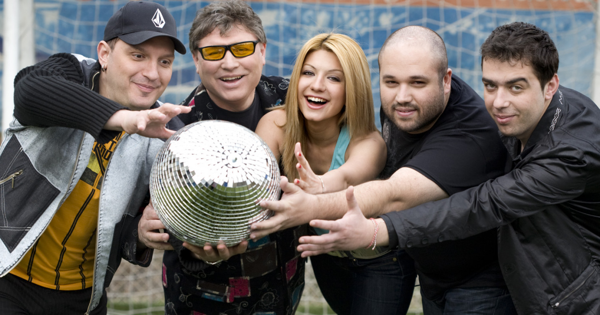

Йоана Драгнева, известна още като Йоана, главен вокал на Deep Zone, е родена в София и
скоро открива, че е родена за музика и телевизия.
На десет години тя започва да учи в
Българското
национално музикално училище „Любомир Пипков“. В момента тя учи в Националната музикална академия
„Панчо
Владигеров” в София, специализирала е ударни и поп и джаз пеене.
Балтазар стартира да се занимава с DJство през 1998 г. и сега е известен като един от най-уважаваните и популярни диджеи
и продуценти в България.
Той е участвал във всеки голям клуб в страната си, както и в много големи рейви и различни радио и
телевизионни предавания. Международните му концерти са го отвели в близо 20 европейски страни,
включително Англия, Германия, Австрия, Холандия, Белгия, Франция, Малта и Кипър, за да назовем само
няколко. 